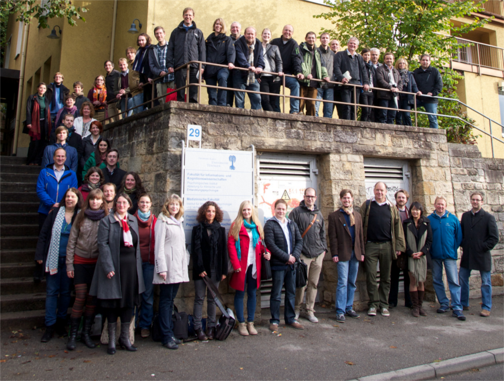

Geschichte
SFB 1070 RessourcenKulturen
 Gegenstand des SFB 1070 sind sozio-kulturelle Dynamiken im Umgang mit Ressourcen . Unter Ressourcen werden materielle wie immaterielle Mittel verstanden, die von Akteuren genutzt werden, um soziale Beziehungen, Einheiten und Identitäten zu schaffen, zu erhalten und zu verändern . In dieser Definition wird der Gegensatz zwischen „natürlichen“ und „kulturellen“ Ressourcen aufge hoben . Auch der Natur entnommene Rohstoffe werden diesem Verständnis nach als kulturell geprägt angesehen . Es wird davon ausgegangen, dass Ressourcen in der Regel nicht isoliert auftreten, sondern als Teil von „RessourcenKom plexen“, die häufig eine Kombination von Dingen, Personen, Wissen und Praktiken sind . Der Umgang mit Ressourcen umfasst diesem Ansatz zufolge sowohl die Erschließung und Gewinnung als auch die Verarbeitung, Verteilung und Nutzung von sozial relevanten Ressourcen (-komplexen) . Er löst bestimmte Dynamiken, also mehrdimensionale Veränderungsprozesse aus, welche einzelne Bereiche oder auch die gesamte Gesellschaft betreffen . Im SFB stehen drei sozio-kulturelle Dynamiken im Mittelpunkt der Untersuchung: Entwicklungen, Bewegungen und Bewertungen . Die Ressourcen, der Umgang mit ihnen und die daraus resultierenden Dynamiken stehen in einem engen Wechselverhältnis mit kulturellen Vorstellungen und Praktiken . Da diese kulturellen Voraussetzungen variabel sind und zudem maßgeblich bestimmen, was als Ressource definiert wird und wie man mit ihr umgeht, lassen sich aus vergleichender Perspektive unterschiedliche RessourcenKulturen ausmachen . Ziele des SFB sind die Neukonzeptualisierung eines kulturwissenschaftlichen Ressourcenbegriffs, die Erkenntnis diachroner sozio-kultureller und politischer Entwicklungen, das Verstehen der Prozesse der Raumerschließung und Identitätsbildung sowie das Erfassen der symbolischen Dimensionen von Ressourcen . Diese Ziele sollen durch die enge Kooperation von Archäologien (Ur- und Frühgeschichte, Archäologie des Mittelalters, Naturwissenschaftliche Archäologie, Klassische Archäologie, Vorderasiatische Archäologie, Biblische Archäologie), Philologien (Klassische Philologie, Vorderasiatische Philologie), Geschichtswissenschaften (Alte Geschichte, Mittelaltergeschichte, Wirtschaftsgeschichte), Geographie (Anthropogeographie, Physische Geographie und Bodenkunde) und Ethnologie erreicht werden . MitarbeiterInnen